指数标示在数字或变量的右上角，表示数或变量乘以自身一定次数。如果指数是2，这也被称为“2次幂”或称“平方”。
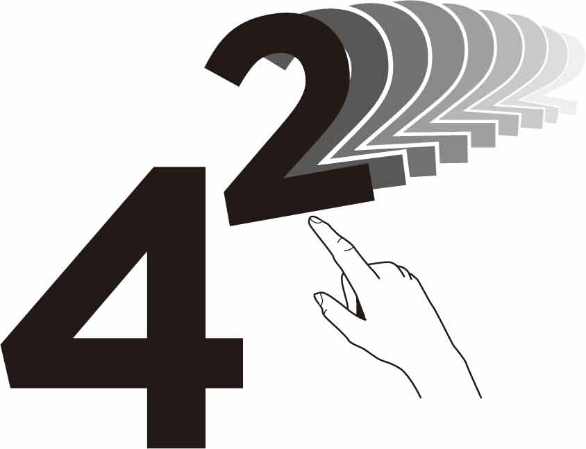
■这个指数是2，意味着4乘以4：
42 ＝4×4＝16
4乘以4本身
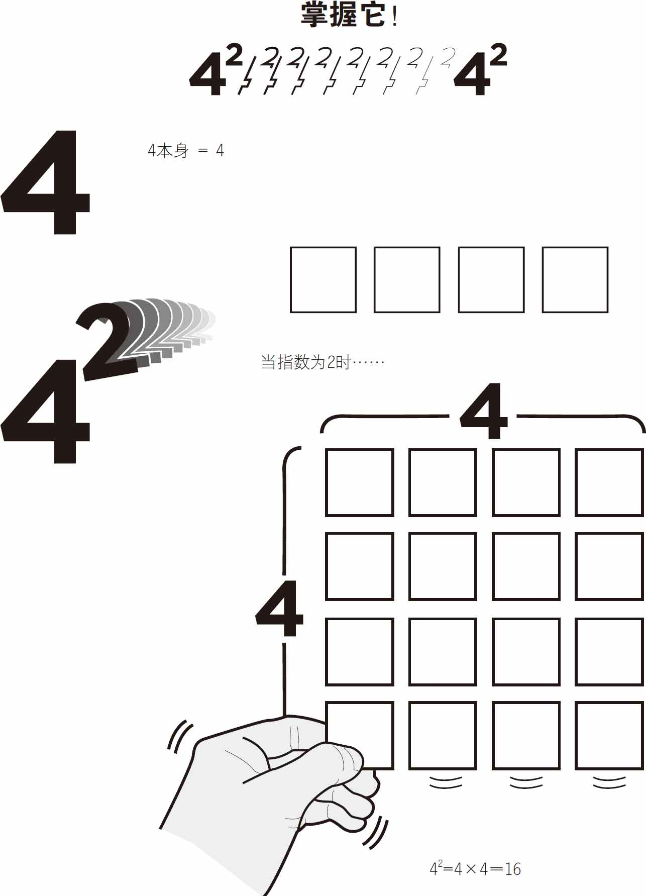
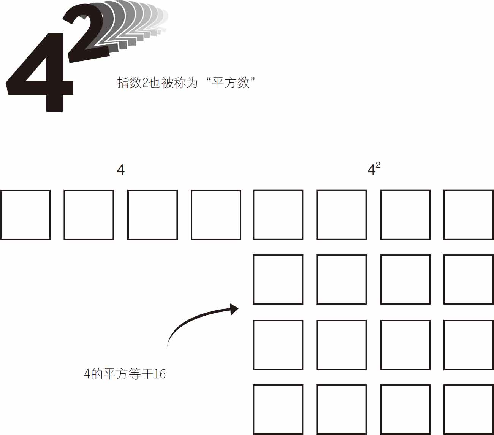
可以用其他指数，如3，这就是所谓的“立方”，表示一个数乘以自己3次。
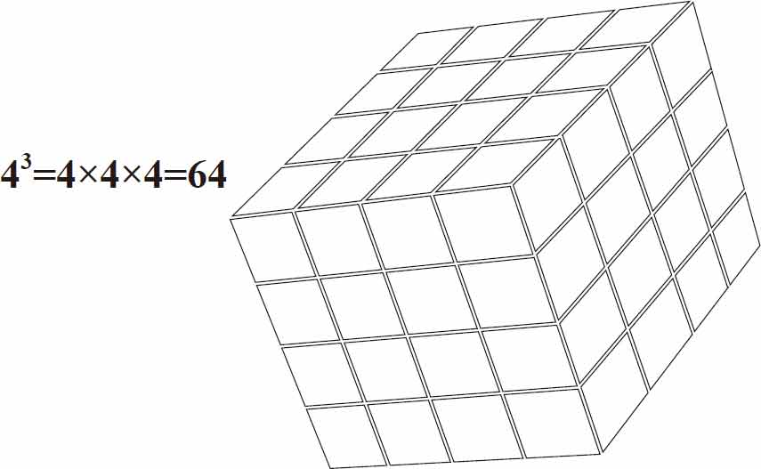
一个数的平方根与“平方”相反。
■“16的平方根”是指一个乘以自己等于16的数。
答：4或（-4）。
■平方根符号被称为根号。平方根里的数目被称为被开方数。
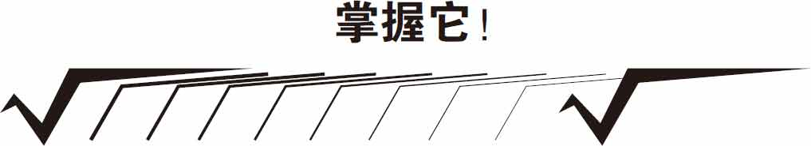
“16的平方根”＝4或（-4），因为4×4＝16，（-4）×（-4）＝16。
注：一个根号符号表示一个平方根。
它是符号的缩写，它的左上角省略了一个小的2，意思是“平方根”的数字。

如果我们想要“立方根”的一个数，我们会在左上角放一个小3。
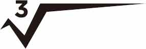
你可以用日常的工具来练习幂和平方根的计算。
需要准备的东西：
►纸板
►回形针或黄铜纸扣
►CD或DVD或罗盘
►剪刀
►纸
►铅笔
►透明胶带
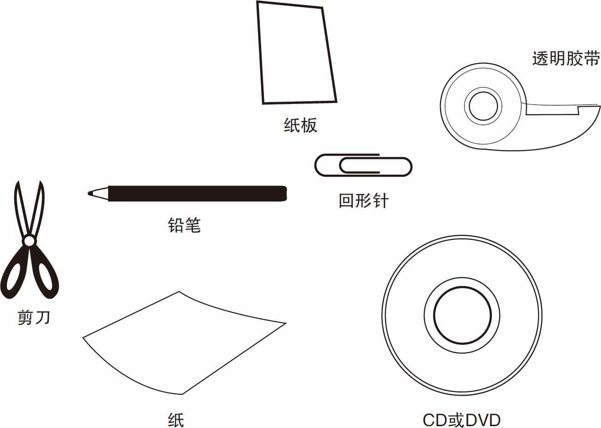
你可以使用下一页的插图作为实验参考，并按步骤操作。
首先，用纸板制作一张CD或DVD大小的圆盘，或者用罗盘来制作直径为3厘米的圆盘，如图2-1所示。
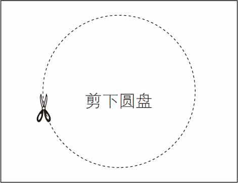
图2-1
接下来，剪出如图2-2所示的矩形纸盖子，包括“窗口”孔。或者，你可以用铅笔画虚线，准确地沿着虚线剪开窗口的部分。
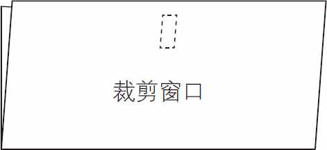
图2-2
把盖子对折，在窗口下方打一个孔，见图2-3。在圆盘的中心也打一个孔，如图2-4所示。
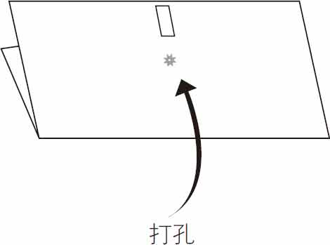
图2-3
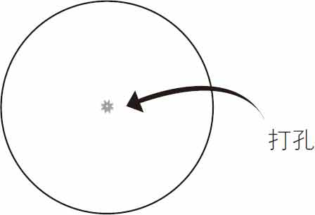
图2-4
如图2-5所示，将圆盘放入外盖中，并小心地将外盖上的黄铜纸扣或回形针的固定夹推入并穿过圆盘的孔洞。

图2-5
拨盘选择方程然后通过窗口查看答案，见图2-6。
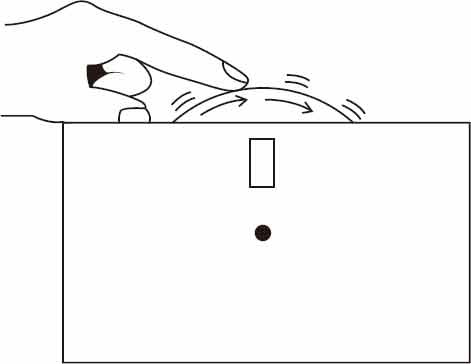
图2-6
下图是实验的一个举例说明。

指数标示在数字或变量的右上角，表示数或变量乘以自身一定次数。
42 就是4的2次幂
请参见这个图形示例：
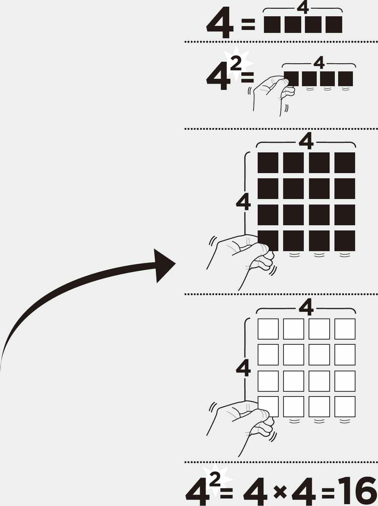
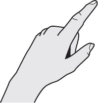
转动刻度盘，测试你的幂和平方根计算能力。
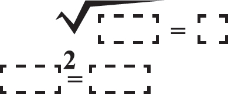
沿虚线切割。
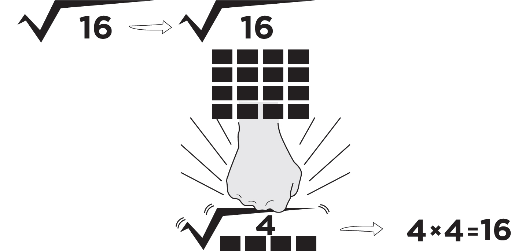
一个数的平方根是相反的“平方”。
意思是：“哪个数字乘以它自己等于16？”
变量是一个代号或字母，如X 。
■变量就像一个口袋，一个容纳数字的口袋——我们只是不知道口袋里装的是什么。但所有的数学规则都适用于它。
■其他的字母可以表示其他的值。例如，t 、v 和d 分别代表时间、速度和距离。
■例如：f （x ），或x 的函数，是一个依赖于x 值的变量，函数定义输入和输出之间的关系。
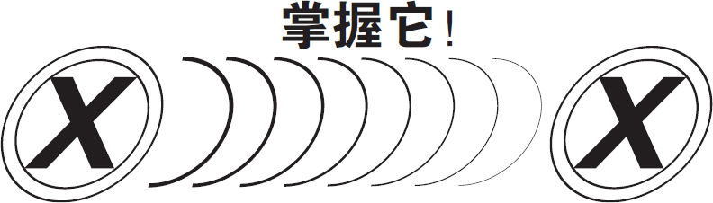
把变量x 单独放在等号的一边：
求解 ：
＋3＝7
＋3−3＝7−3
这两个互相抵消
＋3−3＝4
＝4
 函数是两个变量之间的关系。
函数是两个变量之间的关系。
■函数是两个变量之间的关系，在一个变化过程中，发生变化的量叫变量（数学中，常常为x ，而y 随x 值的变化而变化），有些数值是不随变量改变而改变的，我们称它为常量。
公式：f （x ）＝X ＋5
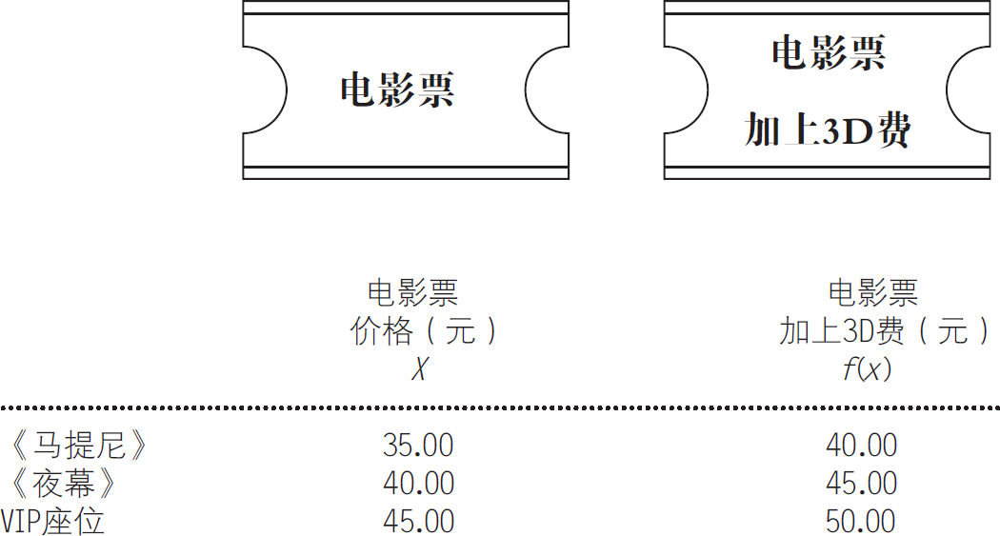
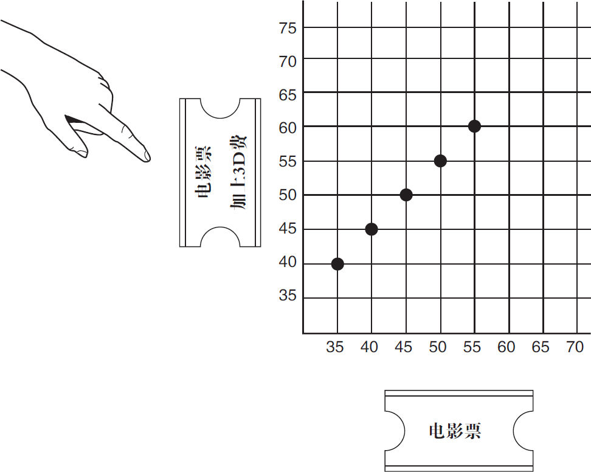
代数可以使用变量表示数学，简化计算。
■一个变量可以代表一个数字、一个人或一件事物，就像电影票的价格一样，根据电影的放映时间或类型（3D、IMAX巨幕电影）而变化。
小提示：由于字母x在代数中经常被用作变量，所以它不被用来表示乘法符号。当我们进行乘法运算时，我们可以在数字和变量之间放置一个小点，或者直接省略。
例如：4x 表示4乘以X 。
■方程式等号两边的值必须相等。
方程式 1＋3＝4，两边值的和都是4
你可以通过等式一侧的值来求解变量的值。
提示：如果要分离变量，只需要在等号的两边同时加上或者减去相同的数就可以了。
■用乘法、除法进行相同的运算。
■它的运算原理是：在方程x ＋2＝7中求解x ，从左边去掉常数2，使变量x 分离，同时为了等式相等，右边也要减去2，这样：
X ＋2＝7→X ＋2–2＝7–2
由于＋2-2相互抵消，剩下的是x ＝5。
■当等式两边都有变量时，可以像常量一样处理变量，在等式两边增减变量就可以了。
例：
X ＋3＝2X
X ＋3＝2X
X –X ＋3＝2X –X
3＝1X
（或X ＝3）
■代数变量演示

■一个方程中间有一个等号，说明两边相等。像这样：
X ＋2＝6
左边的（x ＋2）等于右边的6。
■公式是一种特殊的方程，它表示不同变量之间的关系。
例如：计算盒子容积的公式是：
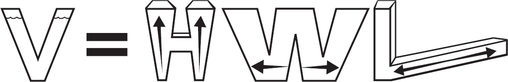
或（V
＝H
乘以W
再乘以L
）
V
＝容积，H
＝高度，W
＝宽度，L
＝长度
如图2-7所示：
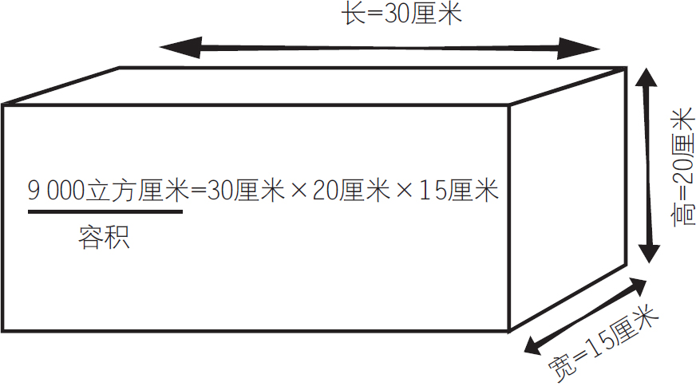
图2-7
■身体质量指数公式是：

BMI ＝身体质量指数，W ＝体重，H ＝身高
例如：
体重指数＝19.53
■速率公式是：
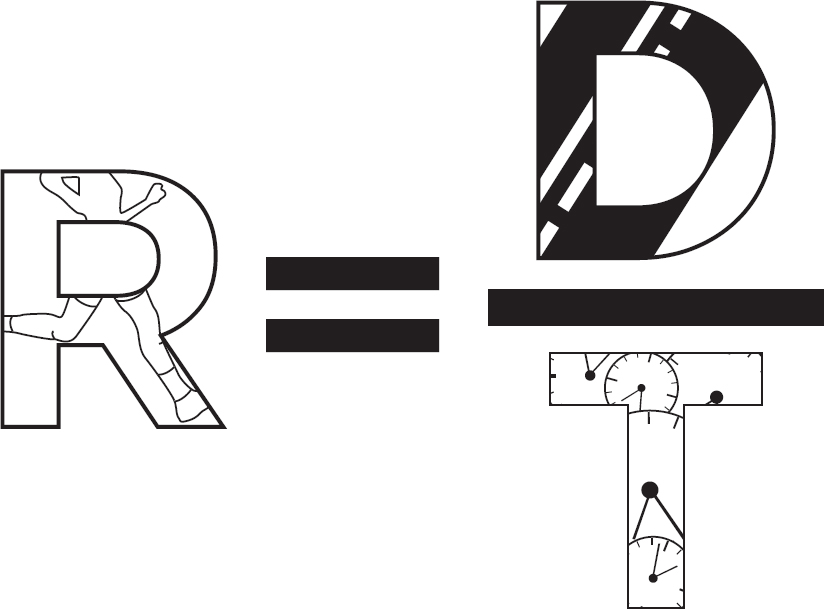
R ＝速率，D ＝距离，T ＝时间
■简单的利息公式是：
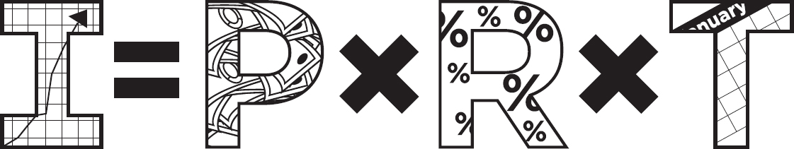
I ＝利息，P ＝本金，R ＝利率，T ＝时间
例如：
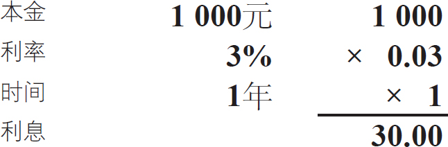
■复利公式是：
未来价值＝本金×（1＋利率）时间年数的幂
例如：
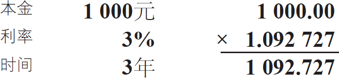
数学表达：
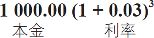
在计算器上计算：
1.03×1.03×1.03×1000＝1092.727
想要一个装置来帮助你计算代数变量值吗？自己动手制作一个，这样无论在哪，你和你的小伙伴们都可以用这个奇妙的代数计算器来计算X 。
需要准备的东西：
►纸板
►回形针或黄铜纸扣
►CD或DVD或罗盘
►剪刀
►纸
►铅笔
►透明胶带
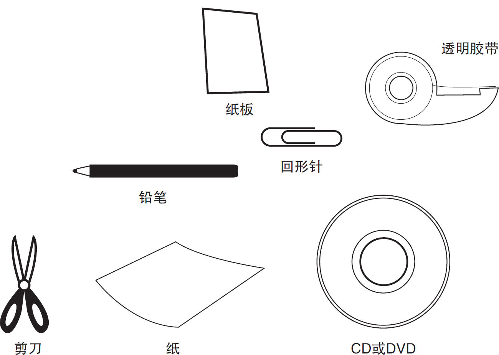
你可以使用下一页的插图作为实验参考，并按步骤操作。
首先，用纸板制作两个CD或DVD大小的圆盘，或者使用罗盘来创建直径为3厘米的圆盘，如图2-8所示。
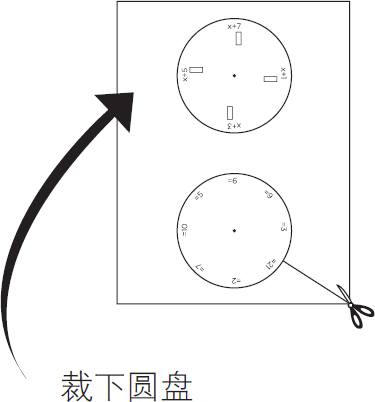
图2-8
接下来，裁剪出如图2-9形状的纸盖，包括显示“窗口”的矩形盖孔。或者你可以用铅笔在纸盖上画上虚线，然后小心地沿着虚线剪出“窗口”。
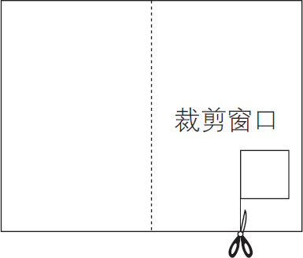
图2-9
把盖子对折，在窗口下方打一个孔，见图2-10。在圆盘的中心也打一个孔，如图2-11所示。
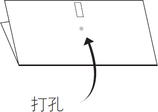 |
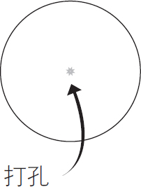 |
| 图2-10 | 图2-11 |
把圆盘放在盖子上，将外盖上的黄铜纸扣或回形针的固定夹推入并穿过圆盘的孔洞，如图2-12所示。

图2-12
在窗口周围拨号并查看窗口中的信息，见图2-13。
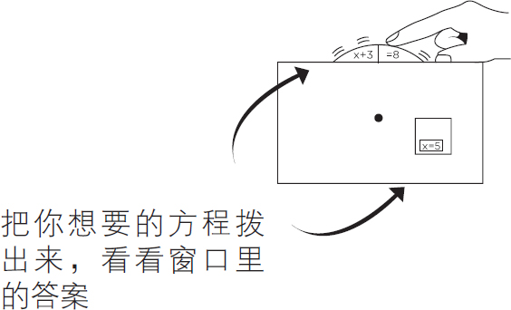
图2-13
下图是实验的一个举例说明。
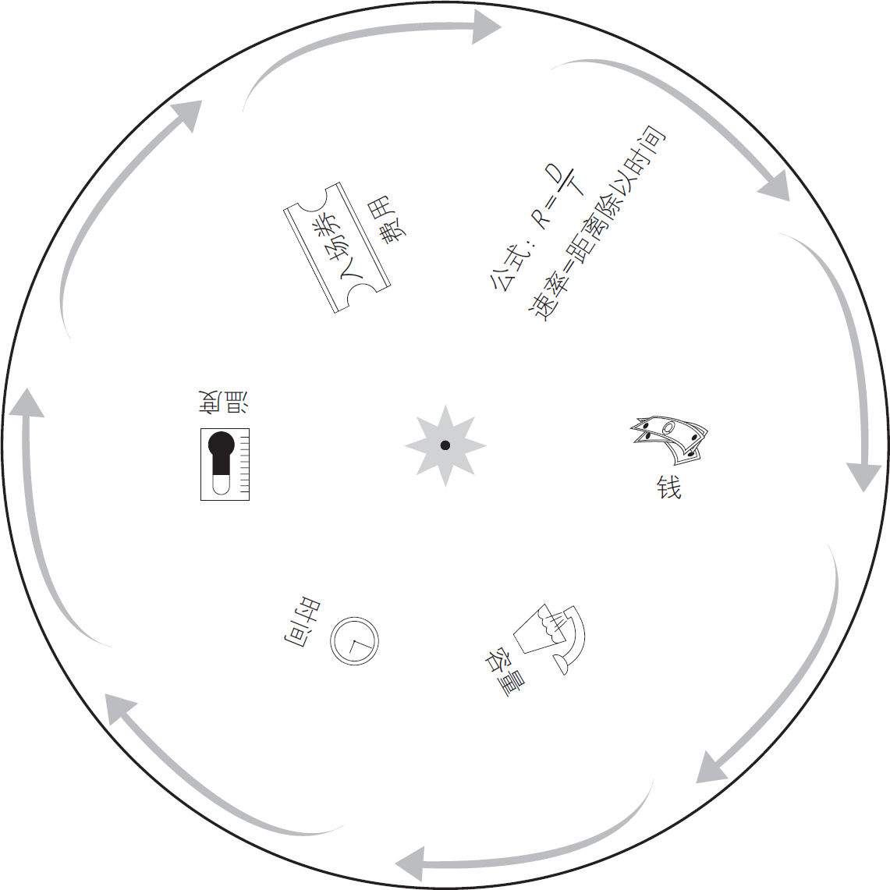
下图是实验的一个举例说明。

变量可以是数字，也可以是人或事物，比如电影票。
变量，如X 或C 或F ，应用方程式和公式计算能节省时间。
字母x可以表示一个变量：
变量相当于是一个未知量的占位符。
一个因变量，或函数，如f（x ），它的值随变量的值变化而变化。
方程式等号的两边的值必须相等。
1＋3＝4
两边的值的和都是4。
求解方程x ＋3＝6中x 的值，从两边减去常数3。
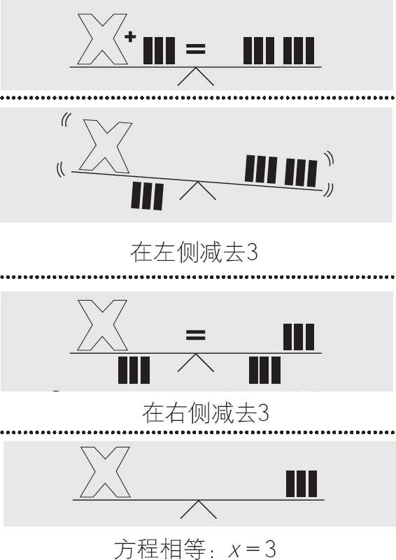
这样你可以在等式的一侧得到一个变量的值。
当方程两边都有同一个变量时，以这种方式分离它们：
X ＋3＝2X →X –X ＋3＝2X –X
相互抵消
3＝1X 或X ＝3
■小明比小珍大三岁。已知小珍22岁，那么小明的年龄是多少？
变量A 将代表小明的年龄，小珍的年龄是22岁，所以等式的形式是这样的：
A –3＝22
让我们来求解A ：A –3＋3＝22＋3
A ＝25
■你也可以使用这种方式来计算完成目标所需要的时间。
例1：已知小华每小时可以制作5支箭，那么小华制作15支箭需要多长时间？

（15支箭除以小华每小时能制作5支箭＝3小时完成）
（当有两个或两个以上的人参与时，可以使用相同的方法。）
例2：小华每小时能制作5支箭，李明每小时只能制作3支箭。如果他们一起工作，制作15支箭需要多长时间？
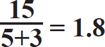
（小华的5支箭＋李明的3支箭，相当于每小时8支箭；15支箭÷8支箭每小时＝1.8小时完成）
例3：小杨可以在6小时内打扫完公寓，小王可以在4小时内打扫干净。如果他们一起工作，要多长时间才能打扫完公寓？
使用公式
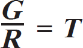
，我们的目标＝1，或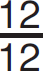
（当整个公寓都打扫干净了）。小杨的速率是每小时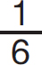
的工作量。小王的速率是 每小时。他们转换成公分母分别是
每小时。他们转换成公分母分别是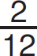
和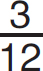
，它们的和是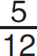
每小时。所以，12除以5等于2.4，他们一起打扫公寓需要花2小时24分钟。飞行速率问题
■两位超级英雄相距500千米。比尔从西向东以每小时100千米的速度飞行，而安妮从东向西以每小时80千米的速度飞行。如果他们全速飞行，他们要多久才能相遇？
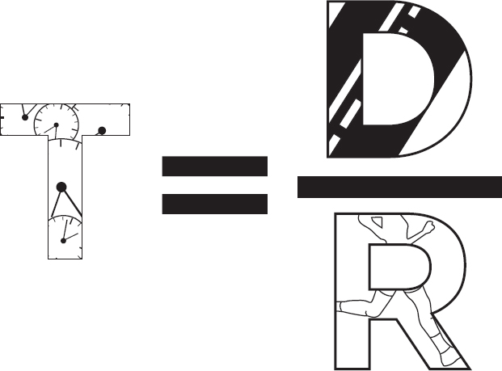
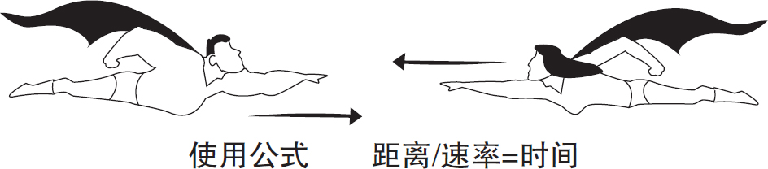
100千米每小时＋80千米每小时＝180千米每小时。
500千米/180千米每小时＝2.8小时，他们相遇需要2.8个小时。
工作问题
■粉刷一间房子，比尔可以在32个小时内完成，凯文可以在40个小时内完成，彼得可以在16个小时内完成。如果他们3人一起工作，要花多长时间可以粉刷完这间房子？
首先，计算每个人每天完成多少工作，假设一天按8小时工作量计算。
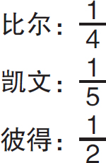
接下来，找出3个分数的公分母（20），然后把3个分数转换成分母相同的分数相加：
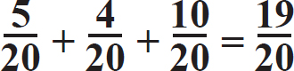
所以3个人一起工作，粉刷完房子需要的时间略低于23小时，准确的是22.8个小时，步骤显示在下面：
让我们交叉相乘
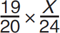
找到速率：X ×20＝20X 19×24＝456
所以：20X ＝456 456÷20＝22.8
用一个神奇的圆盘计算器来检验你在日常生活中的代数计算能力。
需要准备的东西：
►纸板
►回形针或黄铜纸扣
►CD或DVD或罗盘
►剪刀
►纸
►铅笔
►透明胶带
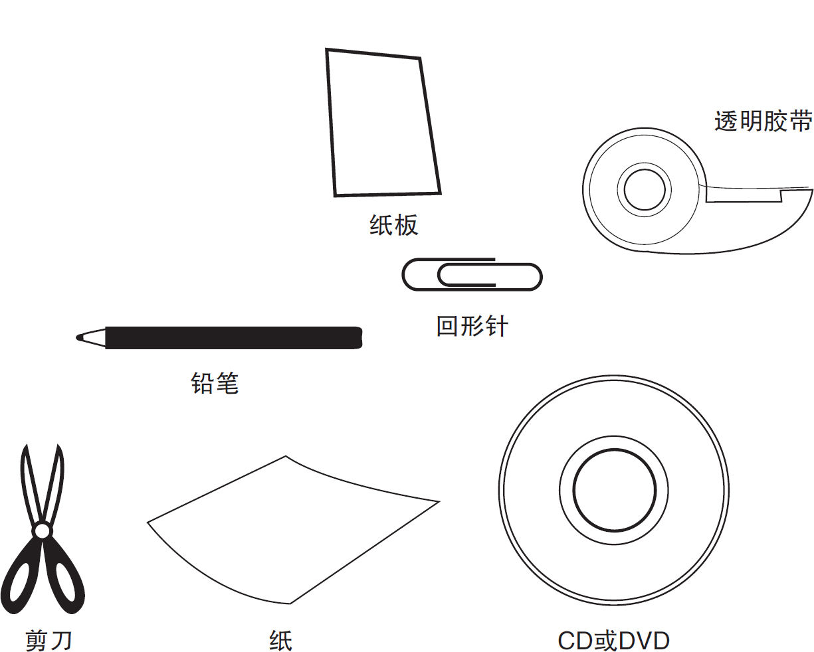
你可以使用下一页的插图作为实验参考，并按步骤操作。
用纸板制作一张CD或DVD大小的圆盘，或者用罗盘来创建直径为3厘米的圆盘，如图2-14所示。接下来，剪出如图2-15所示的矩形盖，包括“窗口”孔。
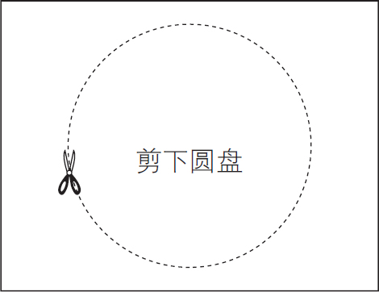 |
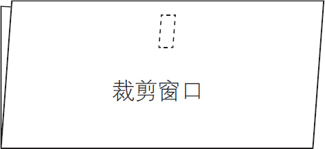 |
| 图2-14 | 图2-15 |
把盖子对折，在窗口下方打一个孔，如图2-16所示。在圆盘的中心也打一个孔，如图2-17所示。
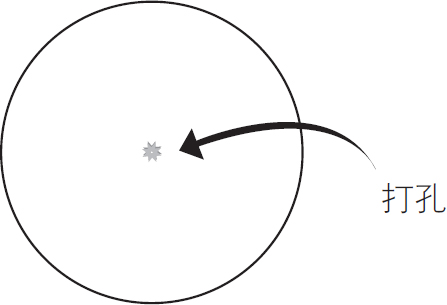 |
|
| 图2-16 | 图2-17 |
把圆盘放在盖子上，将外盖上的黄铜纸扣件或回形针固定夹推入并穿过圆盘的孔洞，如图2-18所示。
图2-18
在窗口周围拨号并查看窗口中的信息，见图2-19。
图2-19
下图是实验的一个举例说明。
下面的代数公式可以将摄氏温度转换为华氏温度，反之亦然。
［X -32（°F）］×5÷9＝（°C）
函数：f （x ）＝（X -32）×5÷9
函数表示两个变量之间的关系。函数是一个预定义的公式，它使用f （x ）来表示。f （x ）意味着x的函数。
在这个例子中，变量f （x ）等于变量（x ＋2）的值。代数函数可以显示在图表上表现趋势，如例1所示。
■坐标平面是在平面上显示的带有编号或者字母的行和列。通常在自动售货机、地图、棋盘和战舰游戏中可以见到。
■坐标平面可以让你对代数公式或等式有直观的了解。
垂直平面或竖轴可以用变量y 表示，也称为值域。
水平面或横轴可以用变量x 表示，也称为定义域。
■当在坐标平面上显示两个或两个以上的点时，两点之间就会产生一条斜线。这条斜线可以表示斜率、速率或两点间的距离等。
斜率＝垂直变化/水平变化。
■如图2-20所示，坐标轴上有一个点。这个点位于（3,4），在x 轴上对应的值为3，在y 轴上对应的值是4。
■在图2-21中，两个点A、B分别位于（1,1），（3,3）。
要计算这两点所连成的直线的斜率，可以用下面的斜率公式：
计算一条线的斜率的公式是：
斜率＝垂直移动距离/水平移动距离，或y的变化除以x的变化。
使用上面的线坐标，（1,1）（3,3）：
斜率＝（3-1）/（3-1）＝2/2＝1
需要准备的东西：
►纸板
►回形针或黄铜纸扣
►CD或DVD或罗盘
►剪刀
►纸
►铅笔
►透明胶带

你可以使用下一页的插图作为实验参考，并按步骤操作。
首先，用纸板制作一张CD或DVD大小的圆盘，或者用一个罗盘来创建直径为3厘米的圆盘，如图2-22所示。

图2-22
接下来，切出如图2-23所示的矩形盖，包括“窗口”孔。
图2-23
把矩形盖对折，在窗口下方打一个孔，见图2-24。在圆盘的中心也打一个孔，如图2-25所示。
| 图2-24 | 图2-25 |
把圆盘放在盖子上，将外盖上的黄铜纸扣或回形针固定夹推入并穿过圆盘的孔洞，如图2-26所示。
图2-26
在窗口周围拨号并查看窗口中的信息，见图2-27。
图2-27
下图是实验的一个举例说明。
坐标平面可以让你对代数公式或方程有直观的了解。
垂直平面或竖轴由变量y 表示。水平面或横轴由变量x 表示。
斜线可以表示斜率、速率或两点间的距离等。
坐标平面是在平面上显示的带有编号或者字母的行和列。通常在自动售货机、地图、棋盘和战舰游戏中可以见到。
坐标平面
自动售货机
棋盘
地图
战舰游戏
■当一个题目中有带括号的数、指数、幂或平方根时，你必须按照特定的步骤来计算。你可以记住这个缩写：
B O D M A S
B： 括号
O： 其他项
D： 除法
M： 乘法
A： 加法
首先，计算括号内的项。然后依次计算幂和平方根和其他分组符号。
接下来，计算除法和乘法（从左到右），最后再计算加法和减法（从左到右）。
例：计算4＋6×2，
加法前先算乘法：6×2＝12，
然后：4＋12＝16。
例：计算（1＋6）×2，
先计算括号内：（1＋6）＝7，
然后：（7）×2＝14.